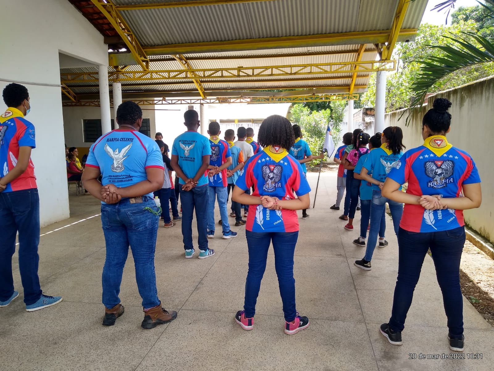

Quem são os desbravadores?
Os Desbravadores são uma organização juvenil da Igreja Adventista do Sétimo Dia, voltada para crianças e adolescentes com idades entre 10 e 15 anos. O programa dos Desbravadores tem como objetivo desenvolver aspectos físicos, mentais, sociais e espirituais dos jovens, promovendo valores como serviço, lealdade, responsabilidade e respeito.
Os Desbravadores participam de atividades que incluem camping, caminhadas, aprendizado de habilidades práticas como primeiros socorros e orientação, além de atividades comunitárias e de serviço. O programa é estruturado em diversas especialidades, como agricultura, culinária, arte, ciência, entre outras, onde os jovens podem ganhar distintivos à medida que adquirem habilidades e conhecimentos nessas áreas.
Os Desbravadores também têm um componente espiritual, com ênfase em desenvolver uma relação pessoal com Deus e promover valores cristãos. Eles frequentemente participam de atividades religiosas, como cultos e estudos bíblicos, e são incentivados a praticar princípios éticos em suas vidas diárias.
Em resumo, os Desbravadores são uma organização voltada para o desenvolvimento integral dos jovens, equilibrando aspectos físicos, mentais, sociais e espirituais, com ênfase em valores cristãos e serviço à comunidade.